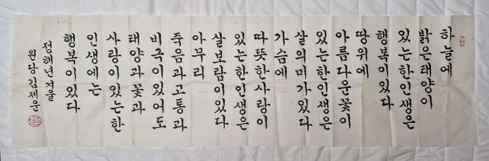

작품 상세 정보
분류: 전통 한글 서예 작품 (작품 12)
중심 내용: 우리말의 아름다움과 지혜를 담은 한글 서체
형식: 전통 서예 족자 또는 액자
작가: 원당 김제운
해설 및 의미
1. 작품 특징 및 글꼴
한글 고유의 부드럽고 정겨운 곡선미와 곧게 뻗은 곧은 선비 정신이 조화를 이루며, 한자 서예와는 또 다른 깊은 울림과 정감 어린 아름다움을 선사합니다.
2. 서명 및 낙관
작품의 여백에는 작가의 정성 어린 서명과 함께 붉은색 낙관(인장)이 선명하게 찍혀 있어 전체적인 완성도와 품격을 높여줍니다.
요약 및 감상
이 작품은 우리말의 아름다운 가치와 삶의 지혜를 한글 필체로 고스란히 담아낸 역작으로, 원당 김제운 작가 특유의 따뜻하고 깊이 있는 예술적 안목을 느낄 수 있습니다.